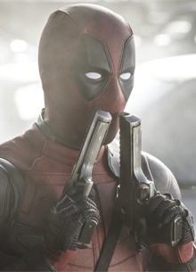
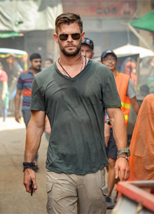
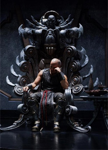

Новости о фильмах, мультфильмах, сериалах и играх
Райан Рейнольдс рассказал о статусе "Дэдпула 3"
Исполнитель роли Дэдпула в двух экранизациях комиксов Marvel Райан Рейнольдс уточнил статус третьего фильма. Его комментарии по этому поводу в беседе с корреспондентами Total Film приводит издание Comic Book. "Для меня все как-то ново, потому что теперь это происходит в Marvel, и, знаете ли, пока я просто ищу входы и выходы, насколько это возможно с того места, где я нахожусь сейчас. А там посмотрим", - сказал он. Отметим, что в конце 2019 года Рейнольдс говорил, что все производство любых продолжений передано от студии Fox. "Сейчас мы трудимся в Marvel, которая внезапно стала своего рода высшей лигой", - сообщил тогда актер. Он не уточнил, когда зрителям стоит ждать выхода третьего фильма о Болтливом Наемнике. Напомним, что "Дэдпул", основанный на серии популярных комиксов, был выпущен в прокат в 2016 году. Его съемки были инициированы самим Рейнольдсом, который в течение длительного времени пытался убедить руководство студии Fox в перспективности такого проекта. Первый фильм и его продолжение, представленное зрителям через два года, собрали в мировом прокате более 700 миллионов долларов подтвердив высокий зрительский интерес к персонажу.
Крис Хемсворт поблагодарил фанатов за поддержку "Эвакуации"
Исполнитель главной роли в боевике "Эвакуация" Крис Хемсворт обратился со словами благодарности к своим поклонникам, которые смогли обеспечить картине один из лучших результатов в истории потокового сервиса Netflix. Видеоролик был опубликован на официальном канале актера в Iтstagram. "Как дела, ребята? Надеюсь, у вас все хорошо. Просто хочу сказать огромное спасибо всем, кто оценил "Эвакуацию". Вы сделали его фильмом номер один на планете. Похоже, это будет самый успешный полнометражный фильм Netflix за все время, и это сногсшибательный результат. Мы потрясены столь впечатляющим откликом и поддержкой, поэтому от своего имени, от имени братьев Руссо, Netflix, нашего режиссера Сэма Харгрейва, большое вам спасибо. Мы любим вас, ребята. Было много разговоров и вопросов о сиквелах, приквелах и всяких других вещах, но все, что я могу сейчас сказать, - это "кто знает". Но с такой поддержкой я был бы очень рад вернуться. Я люблю вас, ребята, вы самые лучшие. Удачи вам. Оставаться в безопасности. Аплодисменты", - сказал он.
Вин Дизель уточнил статус "Риддика 4"
Работа над четвертым фильмом о приключениях Риддика продолжается. Как отметил на своей официальной странице в Instagram исполнитель главной роли и продюсер проекта Вин Дизель, сценарий картины будет завершен уже на следующей неделе. Он не уточнил, когда планируется приступить к съемкам следующей серии. Отметим, что "Риддик 3" вышел в прокат в 2013 году. Утверждалось, что для реализации этого проекта Дизелю даже пришлось взять кредит под залог собственного дома. Капиталовложения, которые оценивались в 38 миллионов долларов, себя оправдали: кассовые сборы ленты составили около 100 миллионов долларов. Ранее Дизель утверждал, что готов сняться еще в двух фильмах о Риддике. "Нам предстоит добраться до Андерверса. Я этого ожидаю и верю, что так нужно. Нужно пройти Андерверс, чтобы попасть на Фурию. Вот эти две истории я наметил. Путешествие к Андерверсу дорогое мероприятие", - говорил он в одном из интервью. Кто возглавит продолжение в качестве режиссера, пока неизвестно. Предыдущие эпизоды франшизы снимал Дэвид Туи.
О Нас
Онлайн-сервис BestFilms.ua — это самый широкий выбор сериалов, фильмов и развлекательных шоу для всей семьи, весь контент главных телеканалов в одном месте и совершенно бесплатно. Начни просмотр дома на сайте или телевизоре и продолжи в дороге на своем смартфоне в любое время. Смотри свое так, как удобно именно тебе.
Оформи подписку, чтобы получить еще больше эксклюзивного контента.
Подписка bestfilms.ua – это:
- Премьеры сериалов до эфира на ТВ
- Собственные шоу и сериалы, выходящие под брендом more originals
- Эксклюзивные зарубежные сериалы одновременно со всем миром
- Трансляции популярных эфирных и платных телеканалов
- Хиты мирового кино и любимая телевизионная классика без рекламы
- Самые зрелищные турниры UFC
Сервис доступен через браузер на любых стационарных компьютерах и ноутбуках, а также в приложениях для iOS, Android, Apple TV, Samsung Smart TV и LG Smart TV (WebOS).
Наши контакты
Если у вас возникли проблемы с работой сервиса, пожалуйста, сообщите нам об этом:
063-708-84-68067-555-51-25
099-768-34-89
support@topfilms.ua